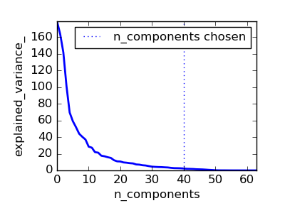
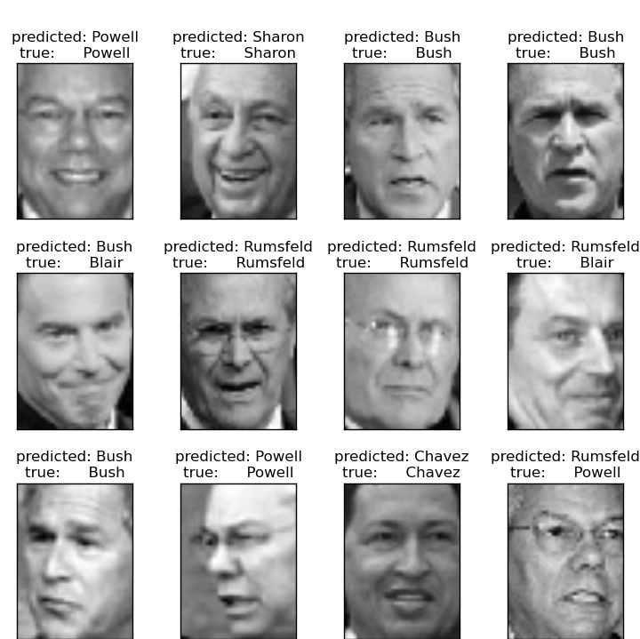
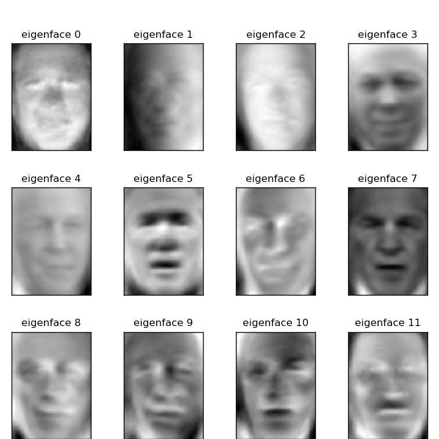

我们已经看到有些estimators对象能够转换数据，而另外一些estimators对象能够预测变量。 我们也可以用scikit-learn的管道对象PipeLine将它们放在一起创建组合estimators对象：
from sklearn import linear_model, decomposition, datasets
from sklearn.pipeline import Pipeline
from sklearn.grid_search import GridSearchCV
logistic = linear_model.LogisticRegression()
pca = decomposition.PCA()
pipe = Pipeline(steps=[('pca', pca), ('logistic', logistic)])
digits = datasets.load_digits()
X_digits = digits.data
y_digits = digits.target
###############################################################################
# Plot the PCA spectrum
pca.fit(X_digits)
plt.figure(1, figsize=(4, 3))
plt.clf()
plt.axes([.2, .2, .7, .7])
plt.plot(pca.explained_variance_, linewidth=2)
plt.axis('tight')
plt.xlabel('n_components')
plt.ylabel('explained_variance_')
###############################################################################
# Prediction
n_components = [20, 40, 64]
Cs = np.logspace(-4, 4, 3)
#Parameters of pipelines can be set using ‘__’ separated parameter names:
estimator = GridSearchCV(pipe,
dict(pca__n_components=n_components,
logistic__C=Cs))
estimator.fit(X_digits, y_digits)
plt.axvline(estimator.best_estimator_.named_steps['pca'].n_components,
linestyle=':', label='n_components chosen')
plt.legend(prop=dict(size=12))
The dataset used in this example is a preprocessed excerpt of the “Labeled Faces in the Wild”, also known as LFW:
"""
===================================================
Faces recognition example using eigenfaces and SVMs
===================================================
The dataset used in this example is a preprocessed excerpt of the
"Labeled Faces in the Wild", aka LFW_:
http://vis-www.cs.umass.edu/lfw/lfw-funneled.tgz (233MB)
.. _LFW: http://vis-www.cs.umass.edu/lfw/
Expected results for the top 5 most represented people in the dataset:
================== ============ ======= ========== =======
precision recall f1-score support
================== ============ ======= ========== =======
Ariel Sharon 0.67 0.92 0.77 13
Colin Powell 0.75 0.78 0.76 60
Donald Rumsfeld 0.78 0.67 0.72 27
George W Bush 0.86 0.86 0.86 146
Gerhard Schroeder 0.76 0.76 0.76 25
Hugo Chavez 0.67 0.67 0.67 15
Tony Blair 0.81 0.69 0.75 36
avg / total 0.80 0.80 0.80 322
================== ============ ======= ========== =======
"""
from __future__ import print_function
from time import time
import logging
import matplotlib.pyplot as plt
from sklearn.cross_validation import train_test_split
from sklearn.datasets import fetch_lfw_people
from sklearn.grid_search import GridSearchCV
from sklearn.metrics import classification_report
from sklearn.metrics import confusion_matrix
from sklearn.decomposition import RandomizedPCA
from sklearn.svm import SVC
print(__doc__)
# Display progress logs on stdout
logging.basicConfig(level=logging.INFO, format='%(asctime)s %(message)s')
###############################################################################
# Download the data, if not already on disk and load it as numpy arrays
lfw_people = fetch_lfw_people(min_faces_per_person=70, resize=0.4)
# introspect the images arrays to find the shapes (for plotting)
n_samples, h, w = lfw_people.images.shape
# for machine learning we use the 2 data directly (as relative pixel
# positions info is ignored by this model)
X = lfw_people.data
n_features = X.shape[1]
# the label to predict is the id of the person
y = lfw_people.target
target_names = lfw_people.target_names
n_classes = target_names.shape[0]
print("Total dataset size:")
print("n_samples: %d" % n_samples)
print("n_features: %d" % n_features)
print("n_classes: %d" % n_classes)
###############################################################################
# Split into a training set and a test set using a stratified k fold
# split into a training and testing set
X_train, X_test, y_train, y_test = train_test_split(
X, y, test_size=0.25, random_state=42)
###############################################################################
# Compute a PCA (eigenfaces) on the face dataset (treated as unlabeled
# dataset): unsupervised feature extraction / dimensionality reduction
n_components = 150
print("Extracting the top %d eigenfaces from %d faces"
% (n_components, X_train.shape[0]))
t0 = time()
pca = RandomizedPCA(n_components=n_components, whiten=True).fit(X_train)
print("done in %0.3fs" % (time() - t0))
eigenfaces = pca.components_.reshape((n_components, h, w))
print("Projecting the input data on the eigenfaces orthonormal basis")
t0 = time()
X_train_pca = pca.transform(X_train)
X_test_pca = pca.transform(X_test)
print("done in %0.3fs" % (time() - t0))
###############################################################################
# Train a SVM classification model
print("Fitting the classifier to the training set")
t0 = time()
param_grid = {'C': [1e3, 5e3, 1e4, 5e4, 1e5],
'gamma': [0.0001, 0.0005, 0.001, 0.005, 0.01, 0.1], }
clf = GridSearchCV(SVC(kernel='rbf', class_weight='balanced'), param_grid)
clf = clf.fit(X_train_pca, y_train)
print("done in %0.3fs" % (time() - t0))
print("Best estimator found by grid search:")
print(clf.best_estimator_)
###############################################################################
# Quantitative evaluation of the model quality on the test set
print("Predicting people's names on the test set")
t0 = time()
y_pred = clf.predict(X_test_pca)
print("done in %0.3fs" % (time() - t0))
print(classification_report(y_test, y_pred, target_names=target_names))
print(confusion_matrix(y_test, y_pred, labels=range(n_classes)))
###############################################################################
# Qualitative evaluation of the predictions using matplotlib
def plot_gallery(images, titles, h, w, n_row=3, n_col=4):
"""Helper function to plot a gallery of portraits"""
plt.figure(figsize=(1.8 * n_col, 2.4 * n_row))
plt.subplots_adjust(bottom=0, left=.01, right=.99, top=.90, hspace=.35)
for i in range(n_row * n_col):
plt.subplot(n_row, n_col, i + 1)
plt.imshow(images[i].reshape((h, w)), cmap=plt.cm.gray)
plt.title(titles[i], size=12)
plt.xticks(())
plt.yticks(())
# plot the result of the prediction on a portion of the test set
def title(y_pred, y_test, target_names, i):
pred_name = target_names[y_pred[i]].rsplit(' ', 1)[-1]
true_name = target_names[y_test[i]].rsplit(' ', 1)[-1]
return 'predicted: %s\ntrue: %s' % (pred_name, true_name)
prediction_titles = [title(y_pred, y_test, target_names, i)
for i in range(y_pred.shape[0])]
plot_gallery(X_test, prediction_titles, h, w)
# plot the gallery of the most significative eigenfaces
eigenface_titles = ["eigenface %d" % i for i in range(eigenfaces.shape[0])]
plot_gallery(eigenfaces, eigenface_titles, h, w)
plt.show()
|  |  |
| Prediction | Eigenfaces |
Expected results for the top 5 most represented people in the dataset:
precision recall f1-score support
Gerhard_Schroeder 0.91 0.75 0.82 28
Donald_Rumsfeld 0.84 0.82 0.83 33
Tony_Blair 0.65 0.82 0.73 34
Colin_Powell 0.78 0.88 0.83 58
George_W_Bush 0.93 0.86 0.90 129
avg / total 0.86 0.84 0.85 282
{kind=link}
{kind=link}